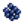
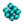
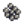
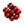
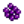

Productividad de la envasadora - Artesano
Esta página enlista la productividad de la envasadora sobre todas las Frutas, Vegetales y Jengibre convertidas en Mermeladas y Encurtidos y Huevas en Huevas envejecidas o Caviar en envasadoras.
Las mermeladas y los encurtidos siempre se venden por mas que las frutas y/o vegetales usadas para hacerlas (excepto en el caso de Moras después de aprender la Sabiduría del oso). Las mermeladas y encurtidos son siempre de una calidad regular, así que el beneficio obtenido de el procesamiento de los objetos es mas bajo cuando se usan objetos de calidad iridio, y mas alto cuando se usan objetos de una calidad regular.
La tabla mostrada a continuación no toma en cuenta los efectos de las Profesiones de Labrador o Artesano, el cual reduce e incrementa el beneficio de un envasadora, respectivamente. Para visualizar el beneficio otorgado por estas profesiones, utiliza el enlace al principio de la página.
Tenga en cuenta que el tiempo de procesamiento de la envasadora es siempre 4000 minutos, con una excepción: Huevas de esturión produce Caviar en 6000 minutos en lugar de 4000.
Productividad (oro/minuto) = ([Precio de venta Procesado] - [Precio de venta del Objeto]) / [Tiempo de procesamiento]
Oro aprox. por día = Productividad (oro/minuto) * 1680 [1]
Tenga en cuenta que puede oprimir en el header de la columna para ordenar la gráfica priorizando esa columna, luego con Shift+Click en una segunda columna para comenzar un orden secundario
| Objeto | Tipo | Calidad | Precio de venta del Objeto | Precio de venta Procesado | Incremento en valor (Oro) | Productividad (oro/minuto) | Oro aprox. por día [1] |
|---|---|---|---|---|---|---|---|
| Veg | Normal | 165 | 490 | 325 | 0.081 | 130 | |
| Veg | 205 | 490 | 285 | 0.071 | 114 | ||
| Veg | 247 | 490 | 243 | 0.061 | 98 | ||
| Veg | 330 | 490 | 160 | 0.040 | 64 | ||
| Fruta | Normal | 605 | 1610 | 1005 | 0.251 | 402 | |
| Fruta | 755 | 1610 | 855 | 0.214 | 342 | ||
| Fruta | 907 | 1610 | 703 | 0.176 | 282 | ||
| Fruta | 1210 | 1610 | 400 | 0.100 | 160 | ||
| Fruta | Normal | 110 | 350 | 240 | 0.060 | 96 | |
| Fruta | 137 | 350 | 213 | 0.053 | 85 | ||
| Fruta | 165 | 350 | 185 | 0.046 | 74 | ||
| Fruta | 220 | 350 | 130 | 0.033 | 53 | ||
| Fruta | Normal | 55 | 210 | 155 | 0.039 | 62 | |
| Fruta | 68 | 210 | 142 | 0.036 | 58 | ||
| Fruta | 82 | 210 | 128 | 0.032 | 51 | ||
| Fruta | 110 | 210 | 100 | 0.025 | 40 | ||
| Veg | Normal | 176 | 518 | 342 | 0.086 | 138 | |
| Veg | 220 | 518 | 298 | 0.075 | 120 | ||
| Veg | 264 | 518 | 254 | 0.064 | 102 | ||
| Veg | 352 | 518 | 166 | 0.042 | 67 | ||
| Fruta | Normal | 165 | 490 | 325 | 0.081 | 130 | |
| Fruta | 205 | 490 | 285 | 0.071 | 114 | ||
| Fruta | 247 | 490 | 243 | 0.061 | 98 | ||
| Fruta | 330 | 490 | 160 | 0.040 | 64 | ||
| Veg | Normal | 110 | 350 | 240 | 0.060 | 96 | |
| Veg | 137 | 350 | 213 | 0.053 | 85 | ||
| Veg | 165 | 350 | 185 | 0.046 | 74 | ||
| Veg | 220 | 350 | 130 | 0.033 | 53 | ||
| Fruta | Normal | 20 | 126 | 106 | 0.027 | 43 | |
| Fruta | 25 | 126 | 101 | 0.025 | 40 | ||
| Fruta | 30 | 126 | 96 | 0.024 | 38 | ||
| Fruta | 40 | 126 | 86 | 0.022 | 35 | ||
| Fruta | Normal | 22 | 126 | 104 | 0.026 | 42 | |
| Fruta | 44 | 126 | 82 | 0.021 | 34 | ||
| Fruta | Normal | 60 | 126 | 66 | 0.017 | 27 | |
| Fruta | 75 | 126 | 51 | 0.013 | 21 | ||
| Fruta | 90 | 126 | 36 | 0.009 | 14 | ||
| Fruta | 120 | 126 | 6 | 0.002 | 3 | ||
| Fruta | Normal | 66 | 126 | 60 | 0.015 | 24 | |
| Fruta | 132 | 126 | -6 | -0.002 | -3 | ||
| Fruta | Normal | 55 | 210 | 155 | 0.039 | 62 | |
| Fruta | 68 | 210 | 142 | 0.036 | 58 | ||
| Fruta | 82 | 210 | 128 | 0.032 | 51 | ||
| Fruta | 110 | 210 | 100 | 0.025 | 40 | ||
| Veg | Normal | 88 | 294 | 206 | 0.052 | 83 | |
| Veg | 110 | 294 | 184 | 0.046 | 74 | ||
| Veg | 132 | 294 | 162 | 0.041 | 66 | ||
| Veg | 176 | 294 | 118 | 0.030 | 48 | ||
| Fruta | Normal | 75 | 280 | 205 | 0.051 | 82 | |
| Fruta | 93 | 280 | 187 | 0.047 | 75 | ||
| Fruta | 112 | 280 | 168 | 0.042 | 67 | ||
| Fruta | 150 | 280 | 130 | 0.033 | 53 | ||
| Fruta | Normal | 82 | 280 | 198 | 0.050 | 80 | |
| Fruta | 102 | 280 | 178 | 0.045 | 72 | ||
| Fruta | 123 | 280 | 157 | 0.039 | 62 | ||
| Fruta | 165 | 280 | 115 | 0.029 | 46 | ||
| Veg | Normal | 38 | 168 | 130 | 0.033 | 53 | |
| Veg | 47 | 168 | 121 | 0.030 | 48 | ||
| Veg | 57 | 168 | 111 | 0.028 | 45 | ||
| Veg | 77 | 168 | 91 | 0.023 | 37 | ||
| Veg | Normal | 192 | 560 | 368 | 0.092 | 147 | |
| Veg | 239 | 560 | 321 | 0.080 | 128 | ||
| Veg | 288 | 560 | 272 | 0.068 | 109 | ||
| Veg | 385 | 560 | 175 | 0.044 | 70 | ||
| Fruta | Normal | 88 | 294 | 206 | 0.052 | 83 | |
| Fruta | 110 | 294 | 184 | 0.046 | 74 | ||
| Fruta | 132 | 294 | 162 | 0.041 | 66 | ||
| Fruta | 176 | 294 | 118 | 0.030 | 48 | ||
| Fruta | Normal | 100 | 350 | 250 | 0.063 | 101 | |
| Fruta | 125 | 350 | 225 | 0.056 | 90 | ||
| Fruta | 150 | 350 | 200 | 0.050 | 80 | ||
| Fruta | 200 | 350 | 150 | 0.038 | 61 | ||
| Veg | Normal | 55 | 210 | 155 | 0.039 | 62 | |
| Veg | 68 | 210 | 142 | 0.036 | 58 | ||
| Veg | 82 | 210 | 128 | 0.032 | 51 | ||
| Veg | 110 | 210 | 100 | 0.025 | 40 | ||
| Fruta | Normal | 82 | 280 | 198 | 0.050 | 80 | |
| Fruta | 102 | 280 | 178 | 0.045 | 72 | ||
| Fruta | 123 | 280 | 157 | 0.039 | 62 | ||
| Fruta | 165 | 280 | 115 | 0.029 | 46 | ||
| Fruta | Normal | 150 | 490 | 340 | 0.085 | 136 | |
| Fruta | 187 | 490 | 303 | 0.076 | 122 | ||
| Fruta | 225 | 490 | 265 | 0.066 | 106 | ||
| Fruta | 300 | 490 | 190 | 0.048 | 77 | ||
| Veg | Normal | 66 | 238 | 172 | 0.043 | 69 | |
| Veg | 82 | 238 | 156 | 0.039 | 62 | ||
| Veg | 99 | 238 | 139 | 0.035 | 56 | ||
| Veg | 132 | 238 | 106 | 0.027 | 43 | ||
| Veg | Normal | 99 | 322 | 223 | 0.056 | 90 | |
| Veg | 123 | 322 | 199 | 0.050 | 80 | ||
| Veg | 148 | 322 | 174 | 0.044 | 70 | ||
| Veg | 198 | 322 | 124 | 0.031 | 50 | ||
| Veg | Normal | 66 | 238 | 172 | 0.043 | 69 | |
| Veg | 82 | 238 | 156 | 0.039 | 62 | ||
| Veg | 99 | 238 | 139 | 0.035 | 56 | ||
| Veg | 132 | 238 | 106 | 0.027 | 43 | ||
| Recolección | Normal | 60 | 238 | 178 | 0.045 | 72 | |
| Fruta | Normal | 80 | 294 | 214 | 0.054 | 86 | |
| Fruta | 100 | 294 | 194 | 0.049 | 78 | ||
| Fruta | 120 | 294 | 174 | 0.044 | 70 | ||
| Fruta | 160 | 294 | 134 | 0.034 | 54 | ||
| Fruta | Normal | 88 | 294 | 206 | 0.052 | 83 | |
| Fruta | 110 | 294 | 184 | 0.046 | 74 | ||
| Fruta | 132 | 294 | 162 | 0.041 | 66 | ||
| Fruta | 176 | 294 | 118 | 0.030 | 48 | ||
| Veg | Normal | 44 | 182 | 138 | 0.035 | 56 | |
| Veg | 55 | 182 | 127 | 0.032 | 51 | ||
| Veg | 66 | 182 | 116 | 0.029 | 46 | ||
| Veg | 88 | 182 | 94 | 0.024 | 38 | ||
| Veg | Normal | 27 | 140 | 113 | 0.028 | 45 | |
| Veg | 34 | 140 | 106 | 0.027 | 43 | ||
| Veg | 40 | 140 | 100 | 0.025 | 40 | ||
| Veg | 55 | 140 | 85 | 0.021 | 34 | ||
| Fruta | Normal | 44 | 182 | 138 | 0.035 | 56 | |
| Fruta | 55 | 182 | 127 | 0.032 | 51 | ||
| Fruta | 66 | 182 | 116 | 0.029 | 46 | ||
| Fruta | 88 | 182 | 94 | 0.024 | 38 | ||
| Veg | Normal | 121 | 378 | 257 | 0.064 | 102 | |
| Veg | 150 | 378 | 228 | 0.057 | 91 | ||
| Veg | 181 | 378 | 197 | 0.049 | 78 | ||
| Veg | 242 | 378 | 136 | 0.034 | 54 | ||
| Fruta | Normal | 143 | 434 | 291 | 0.073 | 117 | |
| Fruta | 178 | 434 | 256 | 0.064 | 102 | ||
| Fruta | 214 | 434 | 220 | 0.055 | 88 | ||
| Fruta | 286 | 434 | 148 | 0.037 | 59 | ||
| Fruta | Normal | 275 | 770 | 495 | 0.124 | 198 | |
| Fruta | 343 | 770 | 427 | 0.107 | 171 | ||
| Fruta | 412 | 770 | 358 | 0.090 | 144 | ||
| Fruta | 550 | 770 | 220 | 0.055 | 88 | ||
| Fruta | Normal | 110 | 350 | 240 | 0.060 | 96 | |
| Fruta | 137 | 350 | 213 | 0.053 | 85 | ||
| Fruta | 165 | 350 | 185 | 0.046 | 74 | ||
| Fruta | 220 | 350 | 130 | 0.033 | 53 | ||
| Veg | Normal | 38 | 168 | 130 | 0.033 | 53 | |
| Veg | 47 | 168 | 121 | 0.030 | 48 | ||
| Veg | 57 | 168 | 111 | 0.028 | 45 | ||
| Veg | 77 | 168 | 91 | 0.023 | 37 | ||
| Fruta | Normal | 154 | 462 | 308 | 0.077 | 123 | |
| Fruta | 192 | 462 | 270 | 0.068 | 109 | ||
| Fruta | 231 | 462 | 231 | 0.058 | 93 | ||
| Fruta | 308 | 462 | 154 | 0.039 | 62 | ||
| Fruta | Normal | 330 | 910 | 580 | 0.145 | 232 | |
| Fruta | 412 | 910 | 498 | 0.125 | 200 | ||
| Fruta | 495 | 910 | 415 | 0.104 | 166 | ||
| Fruta | 660 | 910 | 250 | 0.063 | 101 | ||
| Fruta | Normal | 154 | 462 | 308 | 0.077 | 123 | |
| Fruta | 192 | 462 | 270 | 0.068 | 109 | ||
| Fruta | 231 | 462 | 231 | 0.058 | 93 | ||
| Fruta | 308 | 462 | 154 | 0.039 | 62 | ||
| Veg | Normal | 88 | 294 | 206 | 0.052 | 83 | |
| Veg | 110 | 294 | 184 | 0.046 | 74 | ||
| Veg | 132 | 294 | 162 | 0.041 | 66 | ||
| Veg | 176 | 294 | 118 | 0.030 | 48 | ||
| Veg | Normal | 352 | 966 | 614 | 0.154 | 246 | |
| Veg | 440 | 966 | 526 | 0.132 | 211 | ||
| Veg | 528 | 966 | 438 | 0.110 | 176 | ||
| Veg | 704 | 966 | 262 | 0.066 | 106 | ||
| Fruta | Normal | 1 | 72 | 71 | 0.018 | 29 | |
| Veg | Normal | 99 | 322 | 223 | 0.056 | 90 | |
| Veg | 123 | 322 | 199 | 0.050 | 80 | ||
| Veg | 148 | 322 | 174 | 0.044 | 70 | ||
| Veg | 198 | 322 | 124 | 0.031 | 50 | ||
| Veg | Normal | 286 | 798 | 512 | 0.128 | 205 | |
| Veg | 357 | 798 | 441 | 0.110 | 176 | ||
| Veg | 429 | 798 | 369 | 0.092 | 147 | ||
| Veg | 572 | 798 | 226 | 0.057 | 91 | ||
| Fruta | Normal | 242 | 686 | 444 | 0.111 | 178 | |
| Fruta | 302 | 686 | 384 | 0.096 | 154 | ||
| Fruta | 363 | 686 | 323 | 0.081 | 130 | ||
| Fruta | 484 | 686 | 202 | 0.051 | 82 | ||
| Fruta | Normal | 5 | 84 | 79 | 0.020 | 32 | |
| Fruta | 6 | 84 | 78 | 0.020 | 32 | ||
| Fruta | 7 | 84 | 77 | 0.019 | 30 | ||
| Fruta | 10 | 84 | 74 | 0.019 | 30 | ||
| Fruta | Normal | 5 | 84 | 79 | 0.020 | 32 | |
| Fruta | 11 | 84 | 73 | 0.018 | 29 | ||
| Fruta | Normal | 15 | 84 | 69 | 0.017 | 27 | |
| Fruta | 18 | 84 | 66 | 0.017 | 27 | ||
| Fruta | 21 | 84 | 63 | 0.016 | 26 | ||
| Fruta | 30 | 84 | 54 | 0.014 | 22 | ||
| Fruta | Normal | 16 | 84 | 68 | 0.017 | 27 | |
| Fruta | 33 | 84 | 51 | 0.013 | 21 | ||
| Fruta | Normal | 80 | 294 | 214 | 0.054 | 86 | |
| Fruta | 100 | 294 | 194 | 0.049 | 78 | ||
| Fruta | 120 | 294 | 174 | 0.044 | 70 | ||
| Fruta | 160 | 294 | 134 | 0.034 | 54 | ||
| Fruta | Normal | 825 | 2170 | 1345 | 0.336 | 538 | |
| Fruta | 1030 | 2170 | 1140 | 0.285 | 456 | ||
| Fruta | 1237 | 2170 | 933 | 0.233 | 373 | ||
| Fruta | 1650 | 2170 | 520 | 0.130 | 208 | ||
| Fruta | Normal | 132 | 406 | 274 | 0.069 | 110 | |
| Fruta | 165 | 406 | 241 | 0.060 | 96 | ||
| Fruta | 198 | 406 | 208 | 0.052 | 83 | ||
| Fruta | 264 | 406 | 142 | 0.036 | 58 | ||
| Veg | Normal | 110 | 350 | 240 | 0.060 | 96 | |
| Veg | 137 | 350 | 213 | 0.053 | 85 | ||
| Veg | 165 | 350 | 185 | 0.046 | 74 | ||
| Veg | 220 | 350 | 130 | 0.033 | 53 | ||
| Veg | Normal | 55 | 210 | 155 | 0.039 | 62 | |
| Veg | Normal | 66 | 238 | 172 | 0.043 | 69 | |
| Veg | 82 | 238 | 156 | 0.039 | 62 | ||
| Veg | 99 | 238 | 139 | 0.035 | 56 | ||
| Veg | 132 | 238 | 106 | 0.027 | 43 | ||
| Veg | Normal | 33 | 154 | 121 | 0.030 | 48 | |
| Veg | 40 | 154 | 114 | 0.029 | 46 | ||
| Veg | 49 | 154 | 105 | 0.026 | 42 | ||
| Veg | 66 | 154 | 88 | 0.022 | 35 | ||
| Veg | Normal | 27 | 140 | 113 | 0.028 | 45 | |
| Veg | 34 | 140 | 106 | 0.027 | 43 | ||
| Veg | 40 | 140 | 100 | 0.025 | 40 | ||
| Veg | 55 | 140 | 85 | 0.021 | 34 | ||
| Fruta | Normal | 80 | 294 | 214 | 0.054 | 86 | |
| Fruta | 100 | 294 | 194 | 0.049 | 78 | ||
| Fruta | 120 | 294 | 174 | 0.044 | 70 | ||
| Fruta | 160 | 294 | 134 | 0.034 | 54 | ||
| Veg | Normal | 176 | 518 | 342 | 0.086 | 138 | |
| Veg | 220 | 518 | 298 | 0.075 | 120 | ||
| Veg | 264 | 518 | 254 | 0.064 | 102 | ||
| Veg | 352 | 518 | 166 | 0.042 | 67 | ||
|  Huevas de Atún blanco [3] | Huevas | Normal | 67 | 187 | 120 | 0.030 | 48 |
| Huevas de Anchoa [3] | Huevas | Normal | 45 | 126 | 81 | 0.020 | 32 |
| Huevas | Normal | 280 | 784 | 504 | 0.126 | 202 | |
|  Huevas de Pez disco [3] | Huevas | Normal | 90 | 252 | 162 | 0.041 | 66 |
| Huevas de Besugo [3] | Huevas | Normal | 52 | 145 | 93 | 0.023 | 37 |
| Huevas | Normal | 67 | 187 | 120 | 0.030 | 48 | |
| Huevas | Normal | 45 | 126 | 81 | 0.020 | 32 | |
| Huevas | Normal | 130 | 364 | 234 | 0.059 | 94 | |
| Huevas | Normal | 55 | 154 | 99 | 0.025 | 40 | |
|  Huevas de Berberecho [3] | Huevas | Normal | 55 | 154 | 99 | 0.025 | 40 |
|  Huevas de Cangrejo [3] | Huevas | Normal | 80 | 224 | 144 | 0.036 | 58 |
| Huevas de Cangrejo de río [3] | Huevas | Normal | 67 | 187 | 120 | 0.030 | 48 |
| Huevas | Normal | 80 | 224 | 144 | 0.036 | 58 | |
| Huevas | Normal | 72 | 201 | 129 | 0.032 | 51 | |
| Huevas | Normal | 80 | 224 | 144 | 0.036 | 58 | |
| Huevas | Normal | 52 | 145 | 93 | 0.023 | 37 | |
| Huevas de Fletán [3] | Huevas | Normal | 70 | 196 | 126 | 0.032 | 51 |
| Huevas de Arenque [3] | Huevas | Normal | 45 | 126 | 81 | 0.020 | 32 |
| Huevas de Pez carámbano [3] | Huevas | Normal | 280 | 784 | 504 | 0.126 | 202 |
| Huevas | Normal | 80 | 224 | 144 | 0.036 | 58 | |
| Huevas de Anguila de lava [3] | Huevas | Normal | 380 | 1064 | 684 | 0.171 | 274 |
| Huevas | Normal | 90 | 252 | 162 | 0.041 | 66 | |
| Huevas | Normal | 80 | 224 | 144 | 0.036 | 58 | |
| Huevas de Langosta [3] | Huevas | Normal | 90 | 252 | 162 | 0.041 | 66 |
| Huevas | Normal | 105 | 294 | 189 | 0.047 | 75 | |
| Huevas | Normal | 45 | 126 | 81 | 0.020 | 32 | |
| Huevas | Normal | 105 | 294 | 189 | 0.047 | 75 | |
| Huevas | Normal | 50 | 140 | 90 | 0.023 | 37 | |
| Huevas | Normal | 57 | 159 | 102 | 0.026 | 42 | |
| Huevas de Bígaro [3] | Huevas | Normal | 40 | 112 | 72 | 0.018 | 29 |
| Huevas | Normal | 80 | 224 | 144 | 0.036 | 58 | |
| Huevas | Normal | 130 | 364 | 234 | 0.059 | 94 | |
| Huevas | Normal | 62 | 173 | 111 | 0.028 | 45 | |
| Huevas de Salmonete [3] | Huevas | Normal | 67 | 187 | 120 | 0.030 | 48 |
| Huevas de Pargo colorado [3] | Huevas | Normal | 55 | 154 | 99 | 0.025 | 40 |
| Huevas | Normal | 67 | 187 | 120 | 0.030 | 48 | |
| Huevas | Normal | 67 | 187 | 120 | 0.030 | 48 | |
| Huevas de Sardina [3] | Huevas | Normal | 50 | 140 | 90 | 0.023 | 37 |
| Huevas | Normal | 105 | 294 | 189 | 0.047 | 75 | |
| Huevas | Normal | 67 | 187 | 120 | 0.030 | 48 | |
| Huevas | Normal | 110 | 308 | 198 | 0.050 | 80 | |
| Huevas | Normal | 60 | 168 | 108 | 0.027 | 43 | |
| Huevas | Normal | 60 | 168 | 108 | 0.027 | 43 | |
| Huevas | Normal | 80 | 224 | 144 | 0.036 | 58 | |
| Huevas | Normal | 55 | 154 | 99 | 0.025 | 40 | |
| Huevas | Normal | 62 | 173 | 111 | 0.028 | 45 | |
| Huevas de Pez asustado [3] | Huevas | Normal | 140 | 392 | 252 | 0.063 | 101 |
| Huevas | Normal | 120 | 336 | 216 | 0.054 | 86 | |
| Huevas | Normal | 180 | 504 | 324 | 0.081 | 130 | |
| Huevas | Normal | 130 | 700 | 570 | 0.095 | 152 | |
| Huevas | Normal | 45 | 126 | 81 | 0.020 | 32 | |
| Huevas | Normal | 155 | 434 | 279 | 0.070 | 112 | |
| Huevas | Normal | 105 | 294 | 189 | 0.047 | 75 | |
| Huevas | Normal | 67 | 187 | 120 | 0.030 | 48 | |
| Huevas de Atún [3] | Huevas | Normal | 80 | 224 | 144 | 0.036 | 58 |
|  Huevas de Salmón sombrío [3] | Huevas | Normal | 105 | 294 | 189 | 0.047 | 75 |
| Huevas | Normal | 82 | 229 | 147 | 0.037 | 59 | |
| Huevas | Normal | 67 | 187 | 120 | 0.030 | 48 |
Notas
- Cada día tiene 1600 minutos de tiempo de procesamiento. De 02:00 a 06:00, las máquinas procesan a 100 minutos por hora. Durante el resto del día, las máquinas procesan a 60 minutos por hora.
Entonces, (4 × 100) + (20 × 60) = 1600 minutos de tiempo de procesamiento por día. - El objeto recolectado que no se beneficia de la profesión de labrador.
- Huevas no se beneficia de la profesión de labrador.